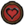
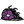

Око жаху
“Бий по оку!”
Око жаху (Eye Of Terror) — бос, доданий в Don't Starve Together. Має 5000 одиниць здоров'я, а також закликає маленькі очі для допомоги у бою.
Є найбільшим босом в одиночній версії гри та одним із найперших гігантів, з якими зустрічається гравець під час свого виживання. Має нетерпимість до будівель гравця і ставиться до вороже настроєних істот.
З'ява
Око жаху з'являється вночі поруч із активованим тераріумом. Після того, як тераріум випустить промінь у небо, пройде 10 секунд, після яких у повітрі з'явиться розлом, з якого вигляне око. Потім він вилізе з розлому і розпочнеться бій. Після вбивства боса тераріум спорожніє і може бути використаний заново через 15 ігрових днів. Якщо не встигнути вбити очі до закінчення ночі, він полетить, але дерево всередині тераріуму не пропаде. Це означає, що боса можна буде покликати знову. За наступного заклику після незакінченого бою очей відновить своє здоров'я у кількості 250 одиниць за кожен пропущений день.
Бій
Основною атакою боса на першій фазі є наліт на персонажа. Перед тим, як здійснити цю атаку, око провернеться кілька разів навколо своєї осі в повітрі, після чого налетить на ворога, завдавши йому 62,5 одиниці втрат. Під час цієї атаки очі боса змінює колір на червоний. На першій фазі монстр використовує лише один політ за один раз.
Після закінчення польоту очей зупиняється і, зберігаючи червоний колір, кілька секунд прокручується з боку на бік, насміхаючись над персонажами. У цей момент око втрачає свою мету. Після цього бос починає закликати своїх поплічників — підозрілих очей.
На першій фазі він здійснює заклик, припадаючи до землі та відкладаючи яйця, які через 15 секунд розгортаються та вступають у бій. Одночасно може бути покликане до двох очок. Заклик здійснюється раз на 18 секунд.
2 Фаза
Після перетворення у ока з'являється рот, а зіниця ховається всередину рота. Крім зовнішнього вигляду змінюються і його характеристики: бос збільшує свою швидкість пересування до 15. Око також провертається перед польотом і налітає на персонажа, але робить це не один раз, здійснюючи 4-5 польотів за раз.
Підозрілі очі все ще допомагають босу, проте на другій фазі він закликає їх плювками і в кількості двох штук за раз. Очі все ще призиваються як яйця, що дозволяє вбивати їх до того, як вони прокинуться. Одночасно на другій фазі бос може мати до чотирьох поплічників.
Також у очі з'являється ближня атака. При наближенні персонажа око ударяє по землі і залишає на своєму місці зменшену карстову вирву. Вирва уповільнюватиме персонажа і пропаде через 20 секунд після своєї появи.
Різне
- Було додано в гру з оновленням "A Winter's Tale".
- Його вид — Megatherioceras Polyphemus (судячи, наприклад, по реплікам Уікерботтом). Тим не менш, єдиний схожий за назвою таксон — вимерлий рід Therioceras надряду Наутилоїдеї.
- У відео оновлення "Long Live The Queen" на долю секунди можна побачити той самий око.
- Судячи з репліки Максвелла про око циклопа циклоп-олені короткозорі.
- Вурт говорить про циклоп-оленя у жіночому роді. Також опис скіна "Скляний глазотик" циклоп-олень жіночого роду. Можливо мається на увазі, що деякі особини самки.
- Було додано в Terraria в рамках оновлення-кросовера "An Eye for An Eye".
- Під час бою з циклопом у Terraria також викликаються тіньові руки, що б'ються на боці боса.
- Існує офіційна плюшева іграшка циклоп-оленя, яку можна купити тут.
- Здоров'я 5000 
- Урон Игроку 62,5
Мобам 125 - Рассудок -100/мин
-100/мин (в бою) - Швидкість атаки 3
- Дистанція атаки 3
- Швидкість пересування 4,5
- Видобуток  x8